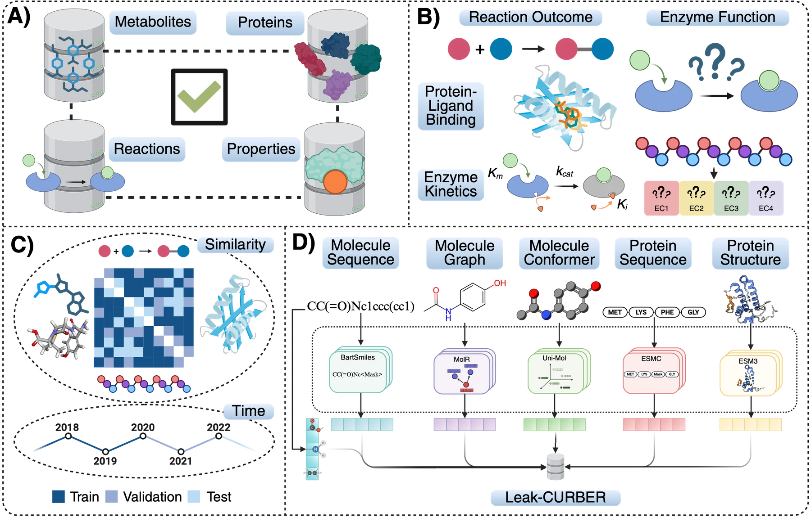

Overview of Leak-CURBER. (A) It joins enzymatic reactions, enzymes, molecules, kinetic parameters and binding records in one schema. (B) It supports four task families (ten subtasks): reaction outcome, enzyme function, kinetic parameters and protein–ligand binding affinity. (C) It provides grouped-random, temporal and similarity-based splits. (D) Ready-to-use multimodal inputs support sequence, structure and reaction-aware learning.
Benchmark at a glance
Scale
Regression under leakage control
Retrieval and classification under leakage control
Abstract
We present Leak-CURBER, the largest multimodal, leakage-controlled benchmark for evaluating machine learning and deep learning models for enzymatic reactions. Leak-CURBER standardizes data from 10 biochemical databases and curates datasets with multimodal inputs, metrics, and leakage-controlled splits for four task families. The benchmark comprises ten subtasks: prediction of reaction outcomes (2), enzyme function (2), kinetic parameters (3), and protein–ligand binding (3). Leak-CURBER establishes new evaluation protocols that control for train/validation/test overlap across protein sequence and structure, molecule string and structure, reaction similarity, and annotation time, thereby exposing generalization failures of learning methods. Evaluating the state-of-the-art (SOTA) models on Leak-CURBER shows that their strong performance degrades sharply under these splits, often approaching random classification or retrieval performance; regression performance drops sharply, often to near zero R2, under protein-based and temporal splits. Leak-CURBER includes precomputed embeddings, continual benchmark releases, reproducible curation scripts, and a public leaderboard to support reliable comparison of enzymatic-reaction models.
Data
Curation pipeline
Multimodal inputs
Tasks
Leak-CURBER has four task families and ten subtasks.
- Reaction outcome (2). Forward reaction prediction and single-step retrosynthesis. Metric: top-k exact match.
- Enzyme function (2). Enzyme classification and reaction-to-enzyme retrieval. Both use EC levels 4, 3, 2 and 1.
- Kinetic parameters (3). Turnover rate kcat, Michaelis constant KM and inhibition strength Ki.
- Protein–ligand binding (3). Binding affinity Kd, IC50 and EC50.
Regression subtasks use standardized units and log-transformed labels. Enzyme function subtasks use hierarchical EC evaluation.
Leakage-controlled splits
Enzymatic reaction tasks leak in several ways. We use the grouped-random split as an in-distribution reference. The other splits test generalization along one similarity axis at a time. Each task uses the splits that fit its inputs.
Grouped random (GR)
Records that share a protein sequence, molecule, reaction SMILES or label go to the same partition. A reaction and its reverse form one group. This removes exact repeats but keeps related examples close.
Similarity splits
Protein sequence (P-seq). MMseqs2 compares sequences. Test proteins have low maximum identity to the training set.
Protein structure (P-struct). Foldseek compares structures. We use the experimental chain first, then AlphaFold, ESMFold2 and ESM3. This split catches remote homologs that keep the same fold.
Molecule 2D and 3D (Mol-2D, Mol-3D). Mol-2D compares Morgan fingerprints with Tanimoto similarity. Mol-3D compares Uni-Mol2 conformer embeddings.
Reaction (DRFP). Differential reaction fingerprints encode the change from reactants to products. Test reactions stay below a similarity threshold to the training set.
For every similarity split, a test entity must fall below the threshold to all training entities. Above-threshold overlap is 0% by construction.
Time
Records split by UniProt annotation date. Validation and test records are later than training records. This approximates prospective use.
Results
Leaderboard
The public leaderboard reports every applicable evaluation axis. It does not rank models by grouped-random performance alone. MetaCyc records form the private test set.
For a subtask t with applicable axes \(A_t\), let \(N_{\mathrm{test}}(t,a)\) be the test size of axis \(a \in A_t\). The axis weight is
\[ w_{ta} = \frac{N_{\mathrm{test}}(t,a)}{\sum_{b \in A_t} N_{\mathrm{test}}(t,b)}. \]
For a metric m, let \(M_{tam}\) be the model's performance on subtask t, axis a and metric m. The aggregate score is
\[ S_{tm} = \sum_{a \in A_t} w_{ta}\, M_{tam}. \]
Scores stay separate by metric and keep each metric's usual ranking direction. A submission must report every axis in \(A_t\) to receive \(S_{tm}\). All per-axis results stay visible.
BibTeX
@inproceedings{ahmed2026leakcurber,
title={...},
author={Ahmed, Adhil and Balaji, Roshan and Bhatt, Nirav Pravinbhai},
booktitle={Advances in Neural Information Processing Systems (NeurIPS) Evaluations and Datasets Track},
year={2026}
}